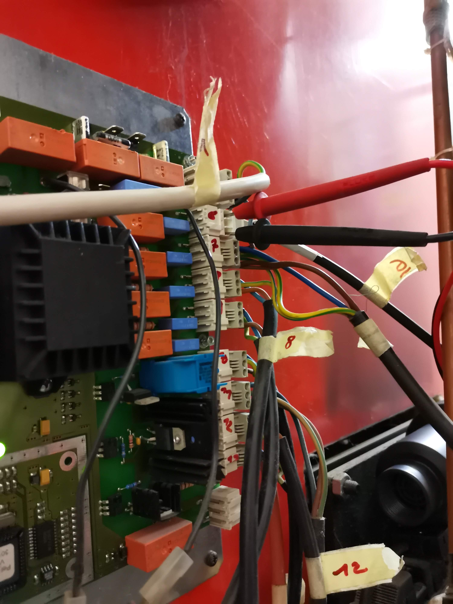

Pelletherm 2000
| Pelletsheizkesseltype | Pelletherm 2000 |
| Fabrikationsnummer | 15.0077.L.14 |
| Baujahr | 2001 |
| Nennwärmeleistung | 15kW |
| Pelletstyp | gem. Önorm M7135 |
| max. Betriebstemperatur | 95 °C |
| max. Betriebsdruck | 3 bar |
| Kesselklasse | 3 |
| Wasserinhalt | 115 Liter |
| Anschluss | 230V | 50Hz | 9,5A | 310W |
1 Reparatur 2020-04-04 :: Defekte Peripherie Treiberplatine
Ursache
Staub-Kurzschluss
1.1 Beschädigte Elemente
1.1.1 Hardware Paltine
2 Reparatur 2020-04-16 :: Fehlende Gerätespannung (230V AC) an Peripherie
2.1 Problem
Nach Austausch des 100 Ω Widerstands, des 10nF Kondensators und des 3,3nF Kondensators fehlt die Spannung an den Peripheriegeräten (s. Maßnahmen). Vermutlich ist das AC Relais direkt unterhalb des ausgetauschten 10nF Kondensators beschädigt und den Geräten fehlt 230V.
2.2 Fehlerpuffer :: Zündversuch Fehlgeschlagen
2.2.1 Maßnahmen
- Test Zündung
- Ausbauen des Zünders
- Testen an Steckdose
- Ergebnis: Lüfter und Heizer am Zünder funktionieren
- Test der Spannungsausgabe am Ausgang des Heizers an der
Treiberplatine
- Abklemmen d. Anschlüsse des Zünders
- Anschließen d. Multimeters an den Zündklemmen

- Test Handbetrieb
- WOS
- Ergebnis: Schaltkontakt hörbar, Antrieb bleibt aber aus
- Ascheschnecke
- Ergebnis: Schaltkontakt hörbar, Schnecke aus
3 Artikelliste
3.1 Leistungsrelais
Details im Datenblatt